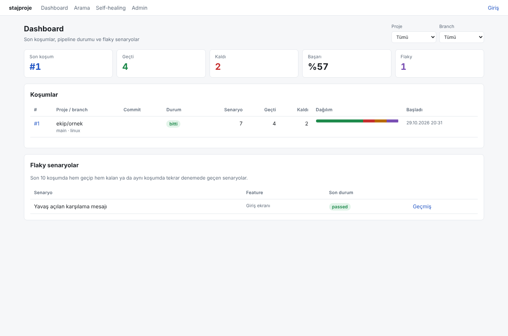
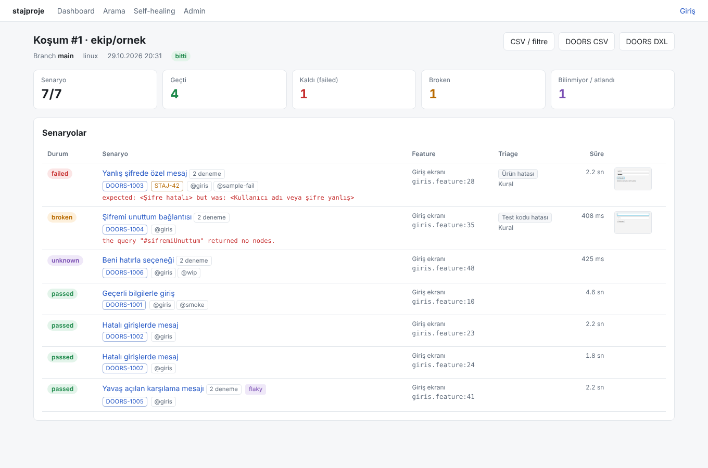
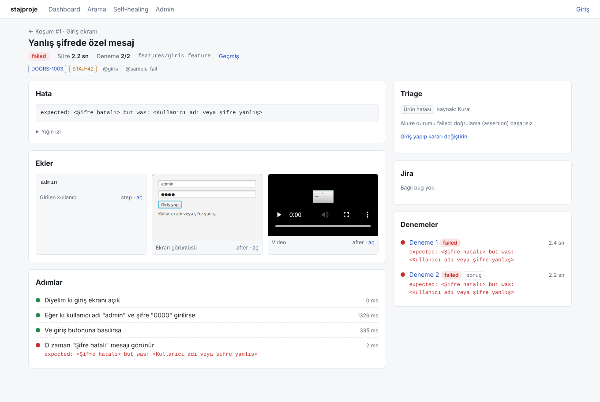

GitLab CI'daki JavaFX e2e testleri için test sonuç merkezi
Gece koşan Cucumber + TestFX testlerinin sonuçlarını canlı izler, raporlar, kalanların nedenine karar verir, ürün hatasını Jira'ya, test kodu hatasını otomatik düzeltmeye yollar.
divan (sunucu) · ulak (CI aracı)
Gece testleri koşuyor; sabah asıl iş başlıyor.
Aynı makinede, iç ağda, ek kurulum gerektirmeyen iki program
divan.exe (~6 MB), bellek hedefi < 100 MBpreflight · start · watch · upload · finish ·
degerlendir · fixulak.exe (~2 MB)Ubuntu ve Windows'ta aynı çalışır. Rust ile yazıldı; çalışma ortamı (JVM, Python, Node) gerektirmez.
Testleri divan değil GitLab runner koşar; divan sonuçları alır ve işler
Pipeline üç aşama; her satır yalnızca bir ulak komutu
mvn test koşar; izleyici sonuçları anında gönderirpreflight + start. Test kalsa bile sonraki aşamalar çalışır.
upload + finish. Rapor linki işin çıktısında ve GitLab ortam linkinde.
degerlendir + fix. ULAK_FIX=off ile kapanır.
Çıkış kodları anlamlı: 1 test/yükleme hatası · 2 sürüm uyumsuz · 3 bellek (OOM) · 4 Windows hizmet oturumu.
Test projesi CI'a tek include satırıyla bağlanır.
Testler bitmeden "şu an hangi senaryo, hangi adımda" görünür
Java tarafındaki küçük eklenti Cucumber olaylarını bir dosyaya yazar; ulak watch satırları sunucuya iletir.
"Giriş ekranı → Şifre alanına yazılır" gibi.
Senaryo biter bitmez Allure dosyaları ve ekleri gönderilir; birkaç saniye içinde raporda.
Dashboard → koşum → senaryo



Son koşumlar, başarı oranı, gidişat, flaky listesi
Feature'lara göre gruplu senaryolar, süreler, triage, Jira ve düzeltme rozetleri
Adımlar, hata ve yığın izi, ekran görüntüsü, video, sahne ağacı, denemeler, geçmiş
Rapor yalnızca bakmak için değil, kullanmak için
Tag, feature, gereksinim no (YTET), Jira, triage kategorisi, durum, hata metni
Alan seçmeli, Excel'de Türkçe karakterler doğru açılır. Gereksinim CSV'si (YTET, YGÖ sütunları) aktarım betiği için.
Ekip linki: ayrıntılı, iç bilgiler gizli.
Genel rapor: yalnızca doğrulanan senaryolar ve ürün hataları.
Genel ana sayfa: proje/branch için tek kalıcı link.
Pipeline bitince tek e-posta: kaç senaryo geçti/kaldı, koşumların rapor linkleri, otomatik açılan MR'lar.
Triage → Jira ya da otomatik düzeltme
Üç kaynak, açık bir öncelik sırası
| Kaynak | Nasıl karar verir | Ne zaman geçerli |
|---|---|---|
| 1Admin | İnsan rapordan kategoriyi seçer | Her zaman; diğerlerini ezer |
| 2Kod ajanı | ulak degerlendir: ekran görüntüsü, sahne ağacı, adım tanımları okunur, gerekçe ve güven yazılır | Güven ≥ 0,70 ise |
| 3Kural | failed → ürün hatası · broken → test kodu hatası · aynı commit'te kalıp geçen → flaky | Başka karar yoksa |
→ otomatik düzeltme
→ Jira
→ bildirim
→ izlenir
Değerlendiren ajan dosya değiştiremez; değiştirirse değişiklik geri alınır ve kararı kullanılmaz.
Aynı hata için ikinci bug açılmaz; ekran görüntüsü issue'ya eklenir
Kalan (ürün hatası) senaryo için sırayla:
@JIRA-ABC-12 tag'i varsa ona bağlanırdivan label'ı, özette senaryo adıSenaryo ↔ gereksinim bağı tag ile
@YTET_1234 @YGÖ-12 @JIRA-STAJ-42 Senaryo: Yanlış şifrede özel mesaj
| Tag | Anlamı |
|---|---|
@YTET_… | Gereksinim numarası |
@YGÖ-… | Ek olarak bağlı gereksinim |
@JIRA-… | Bilinen bug'a doğrudan bağ |
Passed / Failed){{YTET}}, {{YGÖ}} ile yazılırGEREKSINIM_ONEKI, EK_KIMLIK_ONEKLERIulak fix — test kodu hatası olan her senaryo için
auto-fix/run-… açılırsrc/test/ dışına dokunduysa hepsi geri alınırHiçbir şey kendiliğinden birleşmez. MR'ı ekip inceler.
Açık MR'ı olan senaryo için yenisi açılmaz. Koşum başına en fazla 3 deneme.
Birleştirilen düzeltmeler benzer hatalarda ajana örnek olarak verilir.
Rapordan tek senaryo için "OpenCode ile düzelt" düğmesi · auto-fix branch'inde yalnızca düzeltilen senaryo koşar · başarı paneli: deneme / MR / birleştirilen / reddedilen
Yapay zekâ yardımcı; yetkisi dar, her adımı denetleniyor
src/test/ değişebilir; ulak ayrıca denetler.env ve CI değişkenlerinde; log ve hata mesajına yazılmaz (testle denetleniyor)OpenCode ya da Claude Code — aynı skill'ler, aynı kurallar
| Ajan | Görevi | Yetki |
|---|---|---|
degerlendir | Neden kaldı? Karar + güven | Yalnızca okur |
fix | Test kodunu düzeltir | Yalnızca src/test/ |
Tanımlar test projesinde: .opencode/agents/ ya da CLAUDE.md + .claude/settings.json
| Skill | Ne zaman |
|---|---|
hata-siniflandirma | Her zaman, ilk iş |
testfx-secici | Seçici / bekleme hatası |
cucumber-adim | Adım tanımı hatası |
| projenize özel | .claude/skills/<ad>/ |
ulak preflight ajan ve skill dosyalarını her koşumda denetler.
Self-healing'in başarısı büyük ölçüde test projesinin düzenine bağlı
fx:id; seçici #kaydetButonu gibiBackground / @Before ile kursunWaitForAsyncUtils)@YTET_…Thread.sleepDoğrulama koşusu ve auto-fix pipeline'ı senaryoyu tek başına koşturur: başkasına bağlı senaryo orada kalır.
Küçük, bağımsız, iki işletim sisteminde aynı
sunucu, tek dosya
bellek hedefi (testle ölçülür)
ek çalışma ortamı: JVM, Python, Node, veritabanı sunucusu yok
işletim sistemi: Ubuntu, Windows
Her gereksinimin numarası var; her numaranın testi var
birim ve entegrasyon testi — gerçek Allure çıktılarıyla
CI provası: gerçek divan + ulak süreçleri, sahte Maven / GitLab / ajan
uçtan uca kontrol (kurulu sunucuya karşı da)
Test adları gereksinimi söyler: test_sw_6_2_acik_bug_jql_tur_ve_label → SW-6.2.
Gereksinimler ve durumları GEREKSINIMLER_1.md'de; varsayımlar docs/KARARLAR.md'de.
58 yazılım gereksinimi
tamam
kısmen
yapılacak
"Kısmen" olanların kodu hazır; eksik olan gerçek ortamda (GitLab, Windows runner,
Jira, SMTP, model) pilot doğrulaması. Liste: docs/PILOT_KONTROL_LISTESI.md.
fx:id taraması: ajanın seçici yazamadığı yerleri önceden gösterBeş adım
pom.xml'e Allure ve destek jar'ıHooks.java: hata anında ekran görüntüsü + sahne ağacı.gitlab-ci.yml'e tek include satırıCI_API_TOKEN (ve isterseniz ULAK_FIX_TOKEN)ulak preflight ile kontrolinclude:
- project: 'ekip/divan'
ref: main
file: '/ci/gitlab/template/.gitlab-ci.yml'
variables:
ULAK_OS: windows
Rehberler: docs/YENI_PROJE_EKLEME.md · docs/TEST_PROJESI_GEREKSINIMLERI.md ·
docs/KURULUM.md · çalışan örnek: ornek-test-projesi/
divan · ulak
Belgeler: README.md ve docs/